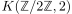
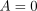
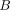
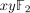
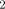
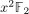
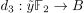
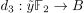
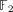

some low integral cohomology of K(Z/2,2)
Proposition
The reduced cohomology of the Eilenberg-MacLane space  is given by
Proof
we use integral cohomology of infinite real projective space and the fiber sequence
Now using integral cohomology of a space with finite homotopy groups and homology as well as Hurewicz theorem shows
Then using
- trivial entry on the axis does not imply trivial entry on the vertical line in the serre spectral sequence
- trivial entry on axis and trivial entry on horizontal line in the serre spectral sequences
and sketching the spectral sequence gives
I'm not sure about how robust kunneth is here ?
Then  since there is no possible differential to kill this.
Now we want to understand the cardinality of :
First we notice that
by the leibniz rule, since in  every element is -torsion
Therefore for degreereasons the group  has to be killed by  .
.
Furthermore  has to be killed (for formal degreereasons) by .
has to be killed (for formal degreereasons) by .
Hence in particular has to contain at least  elements.
elements.
Therefore we need to solve an extension problem:
Now lets keep track of some low homology of  .
.
By the shifting argument we get
We want to compute some -cohomology of : the universal coefficient Theorem for cohomology yields
So we may add